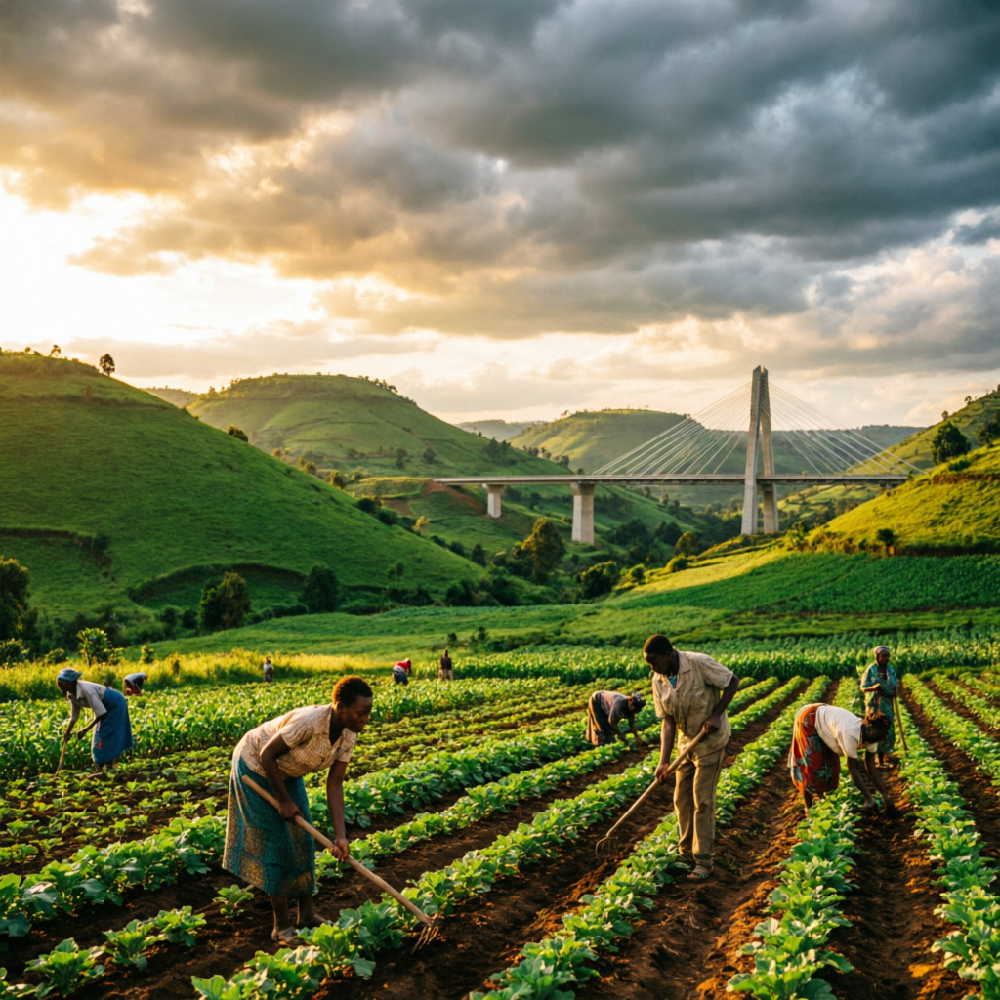

Connect with buyers, find reliable transporters, and grow your agricultural business with Uganda's integrated marketplace platform.
Farmers
Traders
Trucks

A complete ecosystem connecting every stakeholder in Uganda's agricultural supply chain.
Register your profile, map your garden locations, and list produce with photos, quantities, and expected prices.
Learn More →Browse products, compare prices from different farmers, and place orders directly with real-time market news.
Learn More →Truck drivers receive delivery requests and bid to transport goods from rural farms to urban centers.
Learn More →Create your profile as a farmer, buyer, or transporter
Farmers list produce, buyers browse the marketplace
Place orders and arrange transport logistics
Track shipments and receive goods safely
Join thousands of Ugandan farmers, traders, and transporters already using Yield Bridge.